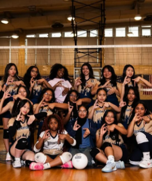

ABOUT ME! :)
Introduction
“Hello! My name is Mirian Menchu and I am 16 years old. I am currently attending Thomas A.Edison and I am in my Junior year of High School.
I attend Thomas A.Edison for their web development program which I am currently taking at the moment. I enjoy being creative and collaborative with
people because it is so much fun connecting with people and making even more connections through them! ”
Fun facts about me!

Best Highlight about my life was getting into the volleyball team because I made so many new friends and through the team I made even more
connections with people who also loved volleyball. Spending time with people doing something we loved really made this the highlight of my Junior Year.
About Volleyball:
- I was an Outside Hitter
- I played some offical and unoffical games
- Made new incredible friends that I now play with everyday after school
- I am hoping to get right side hitter next year!
I have a cat named Pudding!:
Pudding is my entire world. She is only 8 months old and she is a calico cat that is not only fiesty but also a little fat.
She loves eating and playing around with her toy mouses. Everday she comes to my room and starts purring. She loves
her hello kitty blanket. She is the best thing that has ever happened to me and I cannot wait to love her even more.
Ingredients:
- Her birthday is on April 28th
- Her favorite food is chicken
- She has a heart shaped mark on the right side of her body
- She has really pink paws!
Classic Carrot Cake:

An homage to tradition and familial bonds, enriched with the natural sweetness of carrots and a crunch of walnuts, it holds a special place in his heart as it was his late grandfather's favorite. Every year on his grandfather's birthday, Denzel bakes this cake to honor his memory and the bond they shared over the love of baking.
Ingredients:
- 2 cups all-purpose flour
- 2 cups granulated sugar
- 1 teaspoon baking soda
- 2 teaspoons cinnamon
- 1/2 teaspoon salt
- 1 cup vegetable oil
- 4 large eggs
- 2 cups grated carrots
- 1 cup crushed pineapple
- 1/2 cup chopped walnuts
Instructions:
- First, preheat the oven to 350°F
- Next, mix together the flour, sugar, baking soda, cinnamon, and salt in a large bowl
- Then, stir in the oil and eggs until smooth
- Fold in the carrots, pineapple, and walnuts and then pour the batter into a greased baking pan and bake for 30-35 minutes
- Make sure you allow the cake to cool before frosting with cream cheese frosting
Baking tips
importance of measuring ingredients accurately, allowing eggs and butter to reach room temperature before baking, and rotating the baking tray halfway through the baking time for an even bake.
Quotes from happy customers
Tina said, “Denzel’s sourdough is the best in town. It has the perfect crust and is always so fresh!” and Jordan raved, “The almond croissants are a little bite of heaven. I can’t get enough”
Contact information
- denzelstreats@gmail.com
- linkedin.com/in/denzel-baker
- instagram.com/denzelstreats
- facebook.com/DenzelsBakery